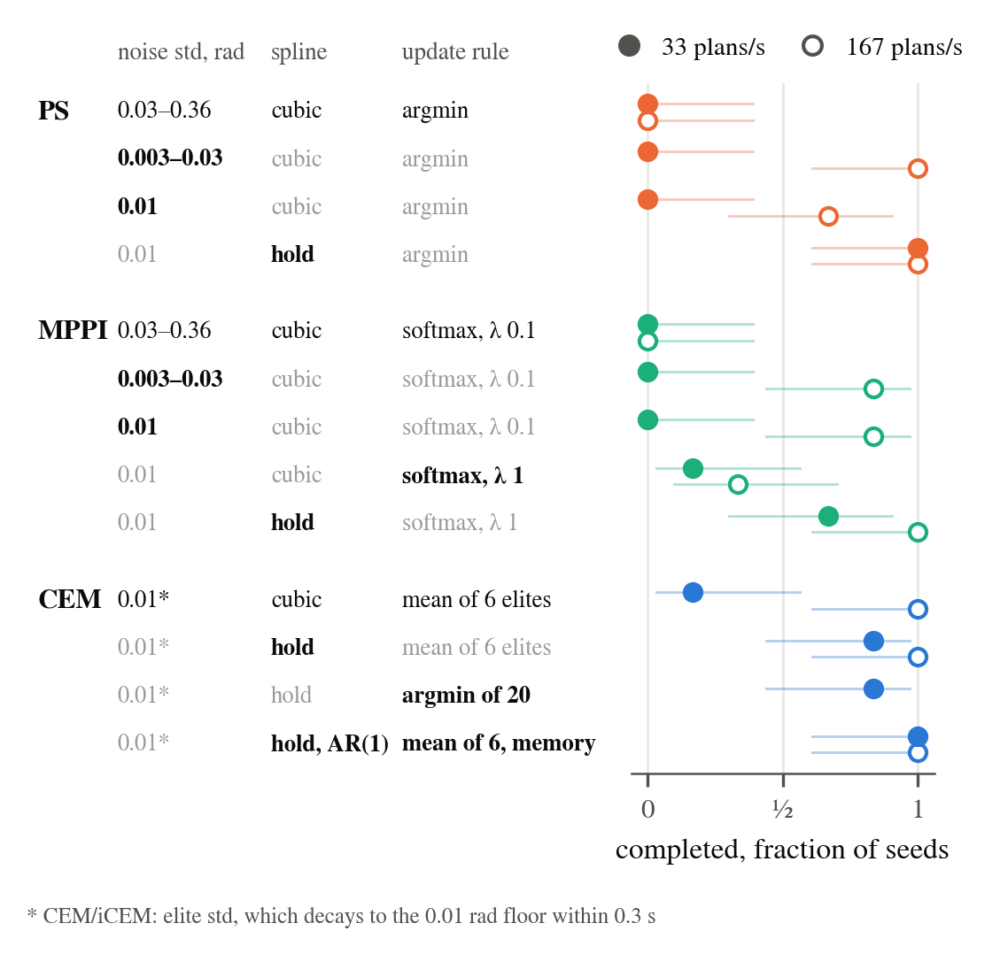
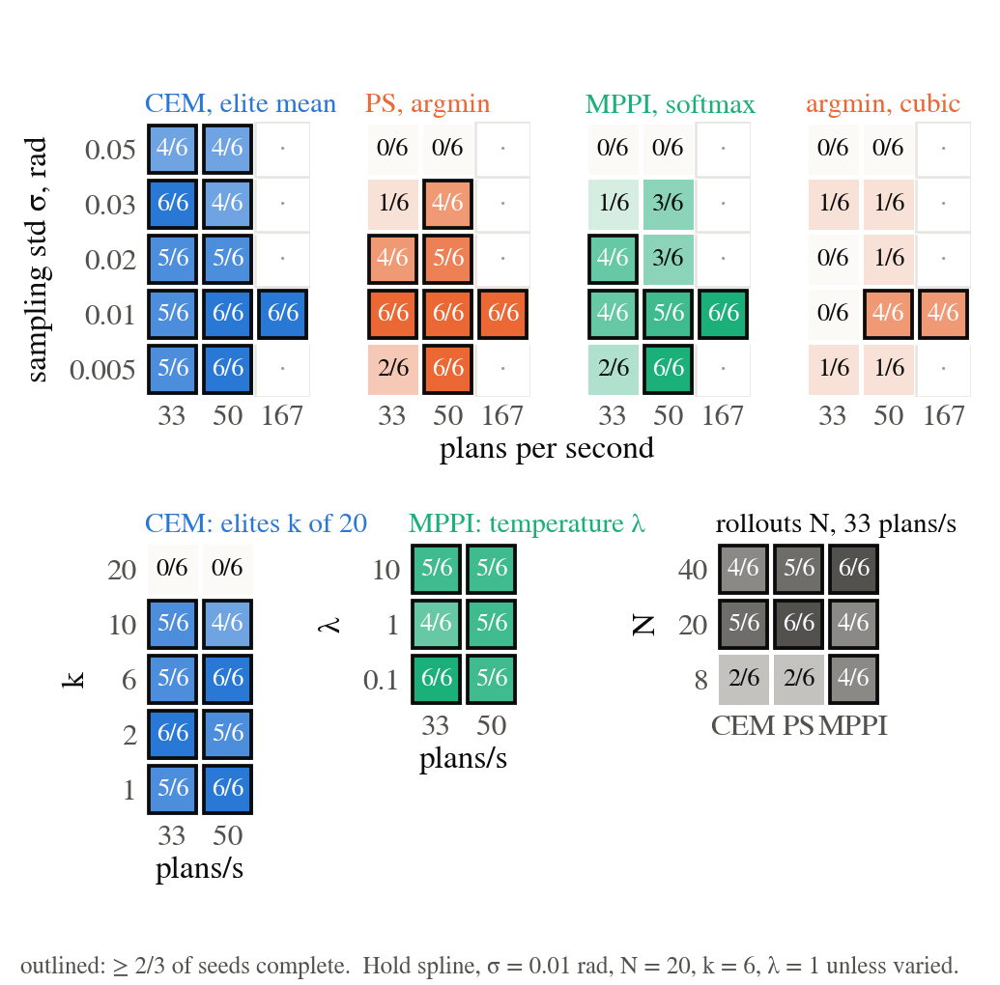
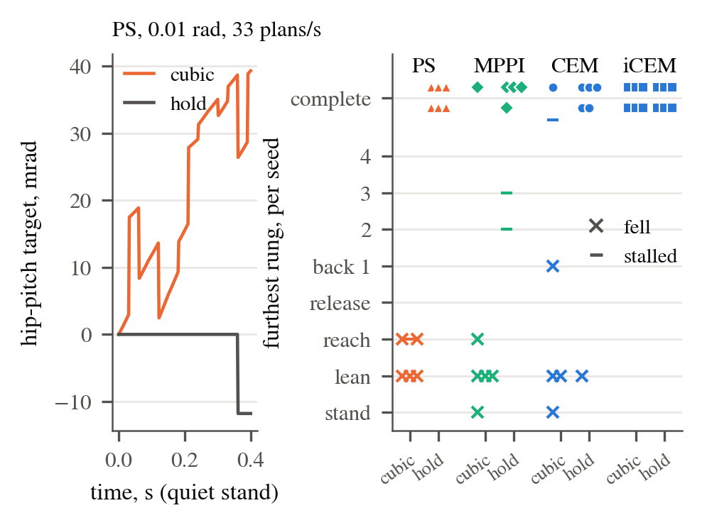
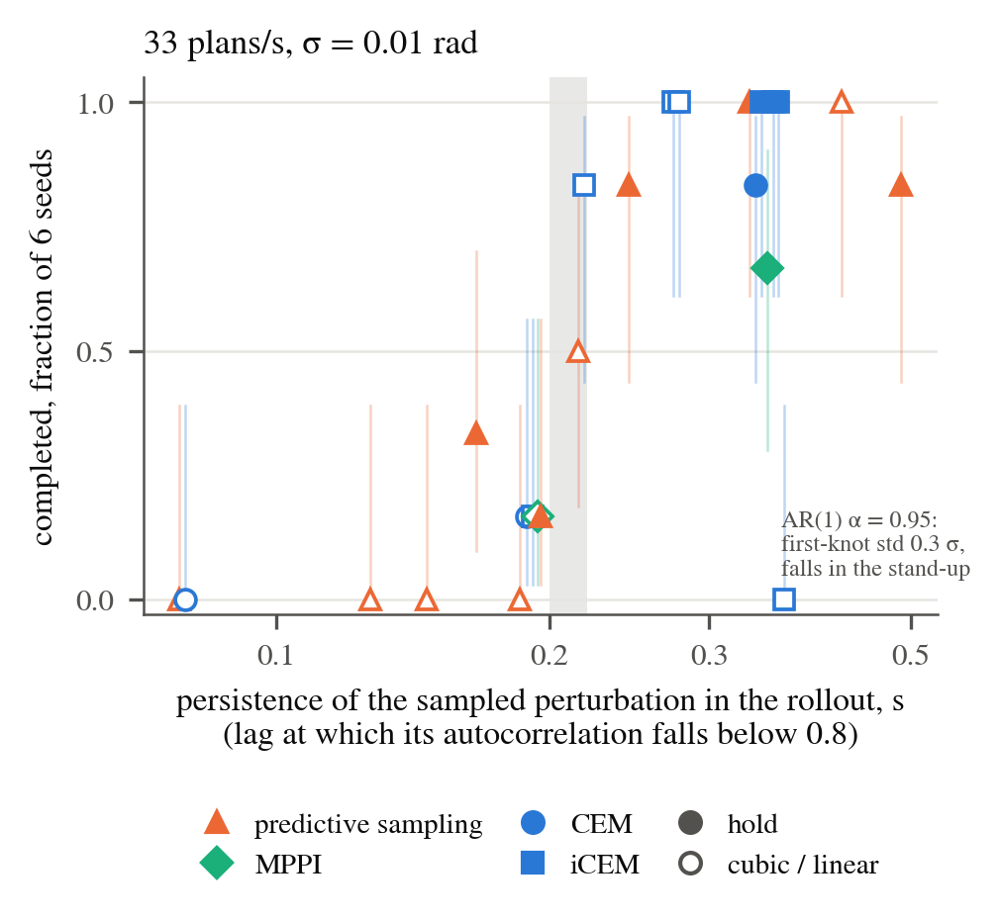
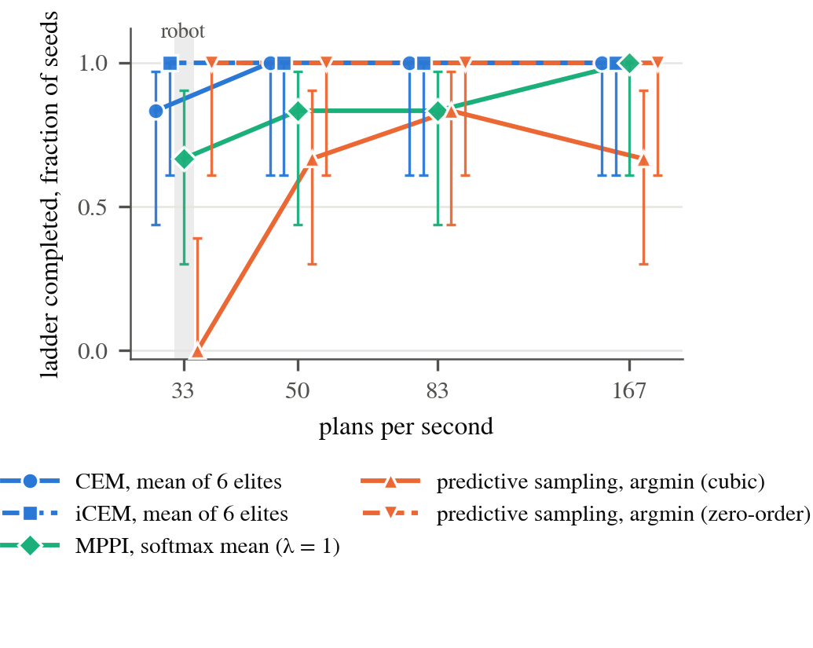

2026-09-11 · branch wxie/planner-ablation off icra2026 at 20f20f0e · Lean H12 Magpie, strategy 25, table face 0.985 m · headless lean_bench --gains deploy (the deploy node's joint PD on plant and planner), 6 planner threads, 20 rollouts, 1.0 s horizon · 33 plans/s unless stated · 6 seeds per arm · 660 scored runs. Supersedes the 2026-09-10 page, which measured a different plant (§3).
At the robot's plan rate (33 plans/s) and joint gains, the shipped CEM completes the braced-lean ladder 5/6 and iCEM 6/6; the shipped predictive sampling and MPPI complete 0/6 each and fall in the stand within 10–45 s. Two of the three things that differ between the families account for that gap; the update rule does not:
sampling_exploration = 0.12 by half the actuator control range, 0.03–0.36 rad per joint. At 0.01 rad in the same units and their shipped cubic spline they still complete 0/6 and 0–1/6.
Sensitivity is where CEM separates from the others. At 33 plans/s its admissible range of sampling std (cells at ≥ 4/6) spans the full tested decade, 0.005–0.05 rad, while predictive sampling with the hold and MPPI with the hold are admissible only at 0.01–0.02 rad; at 50 plans/s predictive sampling widens to 0.005–0.03 and MPPI to 0.005–0.01, and CEM's range is the full decade again. Any elite count that selects works (k = 1, 2, 6, 10 at 5–6/6); k = 20, the mean of all samples, completes 0/6. Eight rollouts instead of twenty cost CEM three completions (2/6) and predictive sampling four (2/6); MPPI at 8 rollouts is unchanged (4/6).

The basin widens with the plan rate for the argmin and the softmax and is already full for the elite mean: over the ten σ × rate cells at 33 and 50 plans/s, CEM is admissible in 10, predictive sampling with the hold in 6, MPPI with the hold in 4, and predictive sampling with its shipped cubic spline in 1. At 167 plans/s every update rule at 0.01 rad completes 6/6 with the hold and the cubic spline recovers to 4–6/6, so the components that matter at the robot's rate stop mattering at five times the rate; the noise scale matters at every rate (shipped predictive sampling and MPPI 0/6 at 167 plans/s as at 33).
lean_bench (mjpc/lean_bench.cc) runs the task's plant at 2 ms with the deploy node's KP/KV table written into the plant and the planner model, re-plans every --spp plant steps (15 = 33 plans/s, 10 = 50, 6 = 83, 3 = 167), evaluates the policy spline every plant step, and logs one row per plan. The planner rollout step is 10 ms, the horizon 1.0 s with 3 spline knots, 20 rollouts, 6 threads, on all arms. Seeds 0–5 set the sampler and a 3 mm initial perturbation; nothing else differs between seeds. An arm is one planner id plus numeric overrides (arms.py), so every row of every table is the shipped model with named numbers changed.
Outcomes per run, mutually exclusive: complete = the final stand rung held for 3 s; fell = pelvis below 0.5 m (the bench stops); collapsed = pelvis below 0.75 m or torso tilt past 60° without the stop; stalled = upright at 75 s without completing. Completion counts carry Wilson 95 % intervals; with 6 seeds, 6/6 means [0.61, 1] and 0/6 means [0, 0.39], so a one-count difference between arms is noise and a 6/6 against 0/6 is not. The dense channels are the executed step per plan (RMS change of the 27 position targets between consecutive plans), the plant cost per rung, the brace normal force, the reach error, and the CoM excursion beyond the foot edge in the first 1.2 s of the lean rung.
The earlier page found the shipped CEM at 1/6 at 33 plans/s and attributed it to the plan rate; the cause was the plant's joint gains. Lean_H12_Magpie.xml (through h1_2_modified_magpie.xml) gives every arm joint kp = 40 and the ankle roll kp = 200; the deploy node's KP[] (h12_control_node.cc, written into the planner and latency models by PatchActuators) has shoulder pitch 90, shoulder roll 60, shoulder yaw 40, elbow 90, wrists 15, ankle roll 80. KV is identical. The node's comments date the raises to 2026-08-08, 08-21 and 08-22; the XML was never updated. The RoboCasa twin and the robot are on the node's table (the plant PD comes from lowcmd kp/kd and the node patches the planner), so anything that runs the planner without the node — the mjpc GUI, lean_bench without --gains deploy, any headless scorer that loads the task XML — evaluates a plant the robot is not.
| joint | XML kp | deploy kp |
|---|---|---|
| hip yaw / pitch / roll, knee, ankle pitch, torso | 150 / 200 / 200 / 200 / 200 / 200 | same |
| ankle roll | 200 | 80 |
| shoulder pitch | 40 | 90 |
| shoulder roll | 40 | 60 |
| shoulder yaw | 40 | 40 |
| elbow | 40 | 90 |
| wrist roll / pitch / yaw | 40 | 15 |
On the XML plant at 33 plans/s: CEM 1/6, iCEM 1/6, predictive sampling at 0.01 rad 0–1/6. On the deploy plant, same seeds, same everything else: CEM 5/6, iCEM 6/6. Over the 85 (arm, seed) pairs run on both plants at 33 plans/s the executed step per plan is the same (median 9.8 mrad on both), and what changes is the plant's response at the lean onset: the CoM retreats behind the foot edge by a median 0.222 m in the first 1.2 s of the lean on the XML plant and 0.156 m on the deploy plant (smaller in 67 of 85 pairs); at the hold and 0.01 rad the counts are 12/41 against 36/41. In that 1.2 s the shoulder pitch lags its target by 0.089 rad on the XML plant against 0.062 rad on the deploy plant, and the hip pitch extends by 0.079 rad against 0.021 (24 matched runs of the four 0.01 rad hold arms, medians), which is the pelvis going back. The 2026-09-10 page's 33 Hz section, including its window on the executed step, is therefore a property of the XML plant and is withdrawn; its 167 plans/s results (all update rules complete at matched noise) hold on the deploy plant too (Table 6). The durable fix is the deploy table in the XML actuators or a gains file both the node and the XML read; until then every sim-only evaluation should state which plant it ran on.
Predictive sampling and MPPI draw per-knot noise with std sampling_exploration × ½ ctrlrange; at the shipped 0.12 that is 0.03 rad on the wrists and 0.36 rad on the hip pitch (median 0.21 rad across the 27 joints). CEM and iCEM draw with std max(elite std, std_min = 0.01) in radians, and the elite std reaches the floor within 0.3 s (log-variance drift −0.21 per refit at k = 6). The shipped predictive sampling moves the executed targets 70–130 mrad per plan during quiet standing and its plant cost is 600–3500 against 5–9 for every working arm; the robot is on the slab by 10–45 s. Turning sampling_exploration down to 0.01 (0.003–0.03 rad per joint, still the range-scaled convention) does not rescue either planner at 33 plans/s (0/6 and 0/6).
| arm | planner and overrides | n | completed | fell | collapsed | stalled | furthest rung, per seed | tcomplete median, s | stand step, mrad / plan | stand cost | peak brace, N | min reach err, mm |
|---|---|---|---|---|---|---|---|---|---|---|---|---|
ps | PS | 6 | 0 | 5 | 1 | 0 | lean✗ stand✗ stand✗ stand✗ stand✗ stand✗ | — | 72.6 | 635.9 | 57 | 607 |
ps_scaled01_cubic | PS, sampling_exploration=0.01 | 6 | 0 | 6 | 0 | 0 | stand✗ sb1✗ stand✗ stand✗ stand✗ stand✗ | — | 15.1 | 186.2 | 33 | 27 |
ps_raw01_cubic | PS, sampling_noise_raw=1, sampling_exploration=0.01, sampling_representation=2 | 6 | 0 | 5 | 0 | 1 | lean✗ lean✗ reach✗ lean✗ reach· reach✗ | — | 7.6 | 8.5 | 41 | 133 |
ps_raw01_zero | PS, sampling_noise_raw=1, sampling_exploration=0.01, sampling_representation=0 | 6 | 6 | 0 | 0 | 0 | final✓ final✓ final✓ final✓ final✓ final✓ | 46.6 | 6.0 | 8.6 | 138 | 34 |
mppi | MPPI | 6 | 0 | 4 | 2 | 0 | lean✗ lean✗ lean✗ stand✗ stand✗ lean✗ | — | 102.4 | 2596.6 | 79 | 2560 |
mppi_scaled01_cubic | MPPI, sampling_exploration=0.01 | 6 | 0 | 6 | 0 | 0 | stand✗ stand✗ lean✗ lean✗ stand✗ stand✗ | — | 14.1 | 147.2 | 37 | 247 |
mppi_raw01_cubic_l0.1 | MPPI, sampling_noise_raw=1, sampling_exploration=0.01, sampling_representation=2, mppi_temperature=0.1 | 6 | 0 | 5 | 0 | 1 | lean✗ reach· reach✗ lean✗ reach✗ lean✗ | — | 6.7 | 9.4 | 89 | 267 |
mppi_raw01_cubic_l1 | MPPI, sampling_noise_raw=1, sampling_exploration=0.01, sampling_representation=2, mppi_temperature=1 | 6 | 1 | 5 | 0 | 0 | final✓ lean✗ stand✗ lean✗ lean✗ reach✗ | 52.1 | 7.0 | 9.6 | 37 | 384 |
mppi_raw01_zero_l1 | MPPI, sampling_noise_raw=1, sampling_exploration=0.01, sampling_representation=0, mppi_temperature=1 | 6 | 4 | 0 | 0 | 2 | final✓ final✓ sb3· final✓ sb2· final✓ | 49.3 | 6.3 | 9.7 | 154 | 31 |
At 0.01 rad, predictive sampling completes 6/6 with a zero-order hold and 0/6 with the cubic spline it ships with. The same switch takes CEM from 5/6 to 1/6 and MPPI (λ = 1) from 4/6 to 1/6; iCEM completes 6/6 with either. The executed step per plan does not separate the two splines (settled stand, 6–12 s: predictive sampling 7.3 mrad cubic vs 3.9 hold, CEM 6.3 vs 5.6, iCEM 2.6 vs 2.7; CEM with k = 2 steps 9.9 mrad and completes 6/6), so the difference is in the shape of the executed target between plans, not its size. Logged at 500 Hz (Figure 3a), the cubic target moves within the 30 ms plan interval at 70–90 mrad/s RMS over the 27 joints — with 3 knots over 1 s the executed action lies on a curve toward a knot 0.5 s ahead — while the hold's target is constant between plans and steps only at re-plans (1.9 mrad in the stand). The within-plan motion is not undone at the next plan (correlation between the ramp and the following jump +0.01 to +0.03), so it is executed as commanded.

Under the cubic spline the failures take several forms. Predictive sampling loses one seed to the backward fall at the lean onset (CoM 0.13 → 0.28 m behind the foot edge in 1.2 s, CoP at the heel, down at 14.4 s), two seeds stay in the lean rung for 25 and 46 s without satisfying its posture tolerance and then fall, and three advance to the reach and fail there. CEM and MPPI under the cubic lose two and three seeds to the onset fall, one each in the stand, and the rest later (Figure 3b). The one hold-CEM failure is the same onset fall.
What the spline changes is how long the sampled perturbation of the executed action persists in the rollout. With a hold and 3 knots the first knot's perturbation is executed unchanged for 0.33 s of every candidate rollout, so the immediate action is what the argmin or the elite mean selects on; with the cubic and white knot noise the executed action leaves the first knot's value at once and reaches an independent draw 0.5 s later. Twenty arms at 33 plans/s and 0.01 rad, varying the spline (hold, linear, cubic), the knot count (2–6) and the knot-noise colour (iCEM's AR(1) at α = 0, 0.3, 0.7, 0.95), separate the two (Figure 4, Table 3). Predictive sampling with 6 cubic knots completes 0/6, 6 hold knots 2/6, 4 cubic knots 0/6, 5 hold knots 1/6, 4 linear knots 0/6, the 3-knot cubic 0/6, the 3-knot linear 3/6, and then 4 hold knots 5/6, 3 hold knots 6/6, 2 hold knots 5/6, 2 cubic knots (a 1 s ramp) 6/6. iCEM under the 3-knot cubic completes 6/6 because its AR(1) knot noise keeps the first knot's perturbation correlated with the later ones: with white noise and its elite memory kept it drops to 1/6, with the colored noise and no memory it stays at 6/6, and α = 0.3 gives 5/6. For each representation persistence.py draws knot perturbations, evaluates the perturbation of the executed action δu(τ) over the horizon with MJPC's own interpolation and slope rules, and reads off the lag at which its correlation with δu(0) falls below 0.8. Every arm with that lag ≤ 0.20 s completes 0–2/6 and every arm with ≥ 0.22 s completes 5–6/6, across the four planners, with the 3-knot linear (0.22 s, 3/6) on the edge. The two sides of the band fail differently: 24 of the 27 non-completions of the white-noise cubic and linear arms are falls, while 7 of the 9 non-completions of the 5- and 6-knot holds are ladders still advancing at the 75 s budget (final or stand-back rungs entered at 63–73 s, against 41–53 s for the completing arms), i.e. a planner that holds each posture within tolerance late rather than one that falls; the integral of the correlation does not order the arms (a 4-knot hold at 0.25 s completes 5/6, the 3-knot cubic at 0.28 s 0/6), so what selection needs is the perturbation still applied at ≈ 0.2 s, about seven plan intervals, not its total duration. The one exception is amplitude, not persistence: at α = 0.95 the cold-started AR(1) gives the first knot a std of 0.3 σ = 3 mrad and every seed falls during the initial stand-up at 4.4–5.0 s. The threshold is the plan interval's, not the task's: the same 3-knot cubic completes 3–4/6 at 50 plans/s and 4–6/6 at 167 (Table 6).

| arm | planner and overrides | n | completed | fell | collapsed | stalled | furthest rung, per seed | tcomplete median, s | stand step, mrad / plan | stand cost | peak brace, N | min reach err, mm |
|---|---|---|---|---|---|---|---|---|---|---|---|---|
ps_raw01_cubic_k6 | PS, sampling_noise_raw=1, sampling_exploration=0.01, sampling_representation=2, sampling_spline_points=6 | 6 | 0 | 6 | 0 | 0 | stand✗ stand✗ stand✗ stand✗ stand✗ stand✗ | — | 9.7 | 237.1 | 24 | — |
ps_raw01_zero_k6 | PS, sampling_noise_raw=1, sampling_exploration=0.01, sampling_representation=0, sampling_spline_points=6 | 6 | 2 | 1 | 0 | 3 | sb1· lean✗ sb1· sb1· final✓ final✓ | 45.4 | 7.8 | 19.5 | 129 | 33 |
ps_raw01_cubic_k4 | PS, sampling_noise_raw=1, sampling_exploration=0.01, sampling_representation=2, sampling_spline_points=4 | 6 | 0 | 6 | 0 | 0 | stand✗ lean✗ lean✗ stand✗ lean✗ stand✗ | — | 9.2 | 56.2 | 19 | 361 |
ps_raw01_zero_k5 | PS, sampling_noise_raw=1, sampling_exploration=0.01, sampling_representation=0, sampling_spline_points=5 | 6 | 1 | 1 | 0 | 4 | final· final✓ final· final· lean✗ release· | 48.9 | 6.9 | 15.2 | 234 | 34 |
ps_raw01_linear_k4 | PS, sampling_noise_raw=1, sampling_exploration=0.01, sampling_representation=1, sampling_spline_points=4 | 6 | 0 | 5 | 0 | 1 | lean✗ reach✗ reach· stand✗ lean✗ stand✗ | — | 8.5 | 17.0 | 39 | 147 |
ps_raw01_cubic | PS, sampling_noise_raw=1, sampling_exploration=0.01, sampling_representation=2 | 6 | 0 | 5 | 0 | 1 | lean✗ lean✗ reach✗ lean✗ reach· reach✗ | — | 7.6 | 8.5 | 41 | 133 |
cem_cubic | CEM, cem_representation=2 | 6 | 1 | 4 | 0 | 1 | sb1✗ final✓ lean✗ final· lean✗ stand✗ | 71.4 | 7.8 | 8.5 | 104 | 46 |
icem_a0_cubic | iCEM, cem_representation=2, icem_alpha=0 | 6 | 1 | 5 | 0 | 0 | stand✗ lean✗ lean✗ lean✗ final✓ lean✗ | 42.0 | 6.6 | 12.2 | 39 | 362 |
mppi_raw01_cubic_l1 | MPPI, sampling_noise_raw=1, sampling_exploration=0.01, sampling_representation=2, mppi_temperature=1 | 6 | 1 | 5 | 0 | 0 | final✓ lean✗ stand✗ lean✗ lean✗ reach✗ | 52.1 | 7.0 | 9.6 | 37 | 384 |
ps_raw01_linear | PS, sampling_noise_raw=1, sampling_exploration=0.01, sampling_representation=1 | 6 | 3 | 2 | 0 | 1 | final✓ reach· final✓ sb3✗ lean✗ final✓ | 56.5 | 7.5 | 8.9 | 177 | 23 |
icem_a03_cubic | iCEM, cem_representation=2, icem_alpha=0.3 | 6 | 5 | 1 | 0 | 0 | lean✗ final✓ final✓ final✓ final✓ final✓ | 44.9 | 5.1 | 6.3 | 31 | 23 |
ps_raw01_zero_k4 | PS, sampling_noise_raw=1, sampling_exploration=0.01, sampling_representation=0, sampling_spline_points=4 | 6 | 5 | 0 | 0 | 1 | final✓ final✓ reach· final✓ final✓ final✓ | 51.9 | 6.6 | 11.0 | 195 | 31 |
icem_cubic | iCEM, cem_representation=2 | 6 | 6 | 0 | 0 | 0 | final✓ final✓ final✓ final✓ final✓ final✓ | 43.1 | 3.1 | 5.4 | 59 | 25 |
icem_keep0_cubic | iCEM, cem_representation=2, icem_elite_keep=0 | 6 | 6 | 0 | 0 | 0 | final✓ final✓ final✓ final✓ final✓ final✓ | 42.6 | 3.2 | 6.4 | 66 | 35 |
ps_raw01_zero | PS, sampling_noise_raw=1, sampling_exploration=0.01, sampling_representation=0 | 6 | 6 | 0 | 0 | 0 | final✓ final✓ final✓ final✓ final✓ final✓ | 46.6 | 6.0 | 8.6 | 138 | 34 |
cem | CEM | 6 | 5 | 1 | 0 | 0 | lean✗ final✓ final✓ final✓ final✓ final✓ | 41.6 | 6.9 | 7.0 | 50 | 47 |
icem_a0 | iCEM, icem_alpha=0 | 6 | 6 | 0 | 0 | 0 | final✓ final✓ final✓ final✓ final✓ final✓ | 48.6 | 6.0 | 7.5 | 134 | 45 |
mppi_raw01_zero_l1 | MPPI, sampling_noise_raw=1, sampling_exploration=0.01, sampling_representation=0, mppi_temperature=1 | 6 | 4 | 0 | 0 | 2 | final✓ final✓ sb3· final✓ sb2· final✓ | 49.3 | 6.3 | 9.7 | 154 | 31 |
icem | iCEM | 6 | 6 | 0 | 0 | 0 | final✓ final✓ final✓ final✓ final✓ final✓ | 44.2 | 3.0 | 7.3 | 77 | 33 |
icem_keep0 | iCEM, icem_elite_keep=0 | 6 | 6 | 0 | 0 | 0 | final✓ final✓ final✓ final✓ final✓ final✓ | 42.2 | 3.1 | 6.0 | 25 | 21 |
ps_raw01_cubic_k2 | PS, sampling_noise_raw=1, sampling_exploration=0.01, sampling_representation=2, sampling_spline_points=2 | 6 | 6 | 0 | 0 | 0 | final✓ final✓ final✓ final✓ final✓ final✓ | 44.3 | 5.2 | 5.4 | 23 | 31 |
ps_raw01_zero_k2 | PS, sampling_noise_raw=1, sampling_exploration=0.01, sampling_representation=0, sampling_spline_points=2 | 6 | 5 | 1 | 0 | 0 | final✓ final✓ final✓ final✓ final✓ sb1✗ | 46.6 | 5.0 | 7.5 | 160 | 26 |
icem_a095_cubic | iCEM, cem_representation=2, icem_alpha=0.95 | 6 | 0 | 6 | 0 | 0 | stand✗ stand✗ stand✗ stand✗ stand✗ stand✗ | — | 1.6 | 224.2 | 16 | — |
At the hold and 0.01 rad: argmin over 20 samples (predictive sampling, and CEM with k = 1) 5–6/6, mean of the k best 5–6/6 for k = 1, 2, 6, 10 and 0/6 for k = 20, softmax mean 6/6 at λ = 0.1 (an argmin in practice, effective sample size 1), 4/6 at λ = 1 and 5/6 at λ = 10. The softmax at λ = 1 differs from the others in the task channels: its two failures are stalls in the stand-back rungs rather than falls, it rests on the table more (fraction of the reach spent on the trunk contact 0.43–0.63 against 0.00–0.31 for CEM), and its brace peak is 88–211 N against 2–120 N. Elite averaging halves CEM's executed step relative to the argmin (5.6 vs 9.5–9.9 mrad per plan in the stand) and iCEM's elite memory and AR(1) start halve it again (2.7 mrad), but at this plant and rate the step size within 3–10 mrad does not predict completion.
| arm | planner and overrides | n | completed | fell | collapsed | stalled | furthest rung, per seed | tcomplete median, s | stand step, mrad / plan | stand cost | peak brace, N | min reach err, mm |
|---|---|---|---|---|---|---|---|---|---|---|---|---|
cem_ne1 | CEM, n_elite=1 | 6 | 5 | 1 | 0 | 0 | final✓ final✓ final✓ final✓ final✓ lean✗ | 46.4 | 9.8 | 9.1 | 129 | 18 |
cem_ne2 | CEM, n_elite=2 | 6 | 6 | 0 | 0 | 0 | final✓ final✓ final✓ final✓ final✓ final✓ | 44.1 | 10.6 | 9.1 | 144 | 19 |
cem | CEM | 6 | 5 | 1 | 0 | 0 | lean✗ final✓ final✓ final✓ final✓ final✓ | 41.6 | 6.9 | 7.0 | 50 | 47 |
cem_ne10 | CEM, n_elite=10 | 6 | 5 | 1 | 0 | 0 | lean✗ final✓ final✓ final✓ final✓ final✓ | 42.8 | 5.7 | 12.2 | 39 | 37 |
cem_ne20 | CEM, n_elite=20 | 6 | 0 | 6 | 0 | 0 | stand✗ stand✗ stand✗ stand✗ lean✗ lean✗ | — | 11.8 | 755.4 | 55 | 283 |
mppi_raw01_zero_l0.1 | MPPI, sampling_noise_raw=1, sampling_exploration=0.01, sampling_representation=0, mppi_temperature=0.1 | 6 | 6 | 0 | 0 | 0 | final✓ final✓ final✓ final✓ final✓ final✓ | 48.3 | 6.1 | 9.1 | 114 | 43 |
mppi_raw01_zero_l1 | MPPI, sampling_noise_raw=1, sampling_exploration=0.01, sampling_representation=0, mppi_temperature=1 | 6 | 4 | 0 | 0 | 2 | final✓ final✓ sb3· final✓ sb2· final✓ | 49.3 | 6.3 | 9.7 | 154 | 31 |
mppi_raw01_zero_l10 | MPPI, sampling_noise_raw=1, sampling_exploration=0.01, sampling_representation=0, mppi_temperature=10 | 6 | 5 | 1 | 0 | 0 | final✓ final✓ lean✗ final✓ final✓ final✓ | 45.0 | 6.8 | 7.5 | 130 | 31 |
icem | iCEM | 6 | 6 | 0 | 0 | 0 | final✓ final✓ final✓ final✓ final✓ final✓ | 44.2 | 3.0 | 7.3 | 77 | 33 |
| arm | planner and overrides | n | completed | fell | collapsed | stalled | furthest rung, per seed | tcomplete median, s | stand step, mrad / plan | stand cost | peak brace, N | min reach err, mm |
|---|---|---|---|---|---|---|---|---|---|---|---|---|
cem_stdmin005 | CEM, std_min=0.005 | 6 | 5 | 1 | 0 | 0 | stand✗ final✓ final✓ final✓ final✓ final✓ | 42.5 | 4.8 | 22.5 | 51 | 32 |
cem | CEM | 6 | 5 | 1 | 0 | 0 | lean✗ final✓ final✓ final✓ final✓ final✓ | 41.6 | 6.9 | 7.0 | 50 | 47 |
cem_stdmin02 | CEM, std_min=0.02 | 6 | 5 | 1 | 0 | 0 | final✓ lean✗ final✓ final✓ final✓ final✓ | 44.3 | 11.9 | 9.1 | 222 | 21 |
cem_stdmin03 | CEM, std_min=0.03 | 6 | 6 | 0 | 0 | 0 | final✓ final✓ final✓ final✓ final✓ final✓ | 44.8 | 16.9 | 10.9 | 268 | 19 |
cem_stdmin05 | CEM, std_min=0.05 | 6 | 4 | 1 | 0 | 1 | final✓ final✓ final✓ sb3· lean✗ final✓ | 49.4 | 27.4 | 27.0 | 221 | 21 |
ps_raw005_zero | PS, sampling_noise_raw=1, sampling_exploration=0.005, sampling_representation=0 | 6 | 2 | 4 | 0 | 0 | stand✗ stand✗ final✓ stand✗ final✓ lean✗ | 45.3 | 4.6 | 132.1 | 21 | 42 |
ps_raw01_zero | PS, sampling_noise_raw=1, sampling_exploration=0.01, sampling_representation=0 | 6 | 6 | 0 | 0 | 0 | final✓ final✓ final✓ final✓ final✓ final✓ | 46.6 | 6.0 | 8.6 | 138 | 34 |
ps_raw02_zero | PS, sampling_noise_raw=1, sampling_exploration=0.02, sampling_representation=0 | 6 | 4 | 2 | 0 | 0 | final✓ final✓ final✓ sb2✗ sb2✗ final✓ | 49.9 | 7.3 | 17.5 | 267 | 30 |
ps_raw03_zero | PS, sampling_noise_raw=1, sampling_exploration=0.03, sampling_representation=0 | 6 | 1 | 2 | 0 | 3 | reach✗ sb2· reach· final✓ reach✗ reach· | 56.8 | 7.5 | 24.6 | 282 | 68 |
ps_raw05_zero | PS, sampling_noise_raw=1, sampling_exploration=0.05, sampling_representation=0 | 6 | 0 | 4 | 0 | 2 | reach✗ lean✗ reach✗ reach· lean✗ reach· | — | 10.2 | 49.7 | 264 | 38 |
mppi_raw005_zero_l1 | MPPI, sampling_noise_raw=1, sampling_exploration=0.005, sampling_representation=0, mppi_temperature=1 | 6 | 2 | 4 | 0 | 0 | final✓ stand✗ sb1✗ final✓ lean✗ lean✗ | 42.5 | 4.2 | 17.5 | 27 | 47 |
mppi_raw01_zero_l1 | MPPI, sampling_noise_raw=1, sampling_exploration=0.01, sampling_representation=0, mppi_temperature=1 | 6 | 4 | 0 | 0 | 2 | final✓ final✓ sb3· final✓ sb2· final✓ | 49.3 | 6.3 | 9.7 | 154 | 31 |
mppi_raw02_zero_l1 | MPPI, sampling_noise_raw=1, sampling_exploration=0.02, sampling_representation=0, mppi_temperature=1 | 6 | 4 | 2 | 0 | 0 | final✓ final✓ sb2✗ final✓ final✓ release✗ | 48.3 | 10.4 | 16.5 | 238 | 10 |
mppi_raw03_zero_l1 | MPPI, sampling_noise_raw=1, sampling_exploration=0.03, sampling_representation=0, mppi_temperature=1 | 6 | 1 | 3 | 0 | 2 | final✓ sb2✗ lean✗ sb3· reach· reach✗ | 55.9 | 13.3 | 28.0 | 285 | 24 |
mppi_raw05_zero_l1 | MPPI, sampling_noise_raw=1, sampling_exploration=0.05, sampling_representation=0, mppi_temperature=1 | 6 | 0 | 5 | 0 | 1 | reach✗ reach✗ lean✗ reach· lean✗ lean✗ | — | 15.1 | 57.4 | 247 | 156 |
Of the five update-rule × spline combinations in Figure 5, the four with the hold complete 5–6/6 at 50 plans/s and 6/6 at 167; at 33 plans/s MPPI (λ = 1) drops to 4/6 with two stalls, CEM's one failure is the lean-onset fall, and the cubic predictive sampling completes 0/6. The cubic spline's loss is graded in rate: 0–1/6 at 33 plans/s, 3–4/6 at 50, 4–6/6 at 167 for predictive sampling, CEM and MPPI alike, which is what the persistence reading of Figure 4 predicts (a 0.28 s correlation time against a threshold that shrinks with the plan interval). The shipped noise scale does not recover at any rate. Completion times where the ladder completes are 42–53 s at every rate and for every rule (the rungs are gated on sustain timers and posture tolerances, not on the planner), so the plan rate changes whether the task is done, not how fast. At 83 plans/s the five combinations complete 5–6/6 (cubic predictive sampling 5/6, MPPI 5/6, the rest 6/6).
The executed step per plan, which sorted the arms on the XML plant, does not on the deploy plant: between 3 and 25 mrad per plan in the lean rung the completing and the failing arms overlap at every rate (the cubic arms fail at the same step as the hold arms that complete), and only the shipped-noise arms at 40–130 mrad separate (paper_figs/fig_window_all). The step is a symptom of the noise scale, not the mechanism of the spline or rate failures.

| arm | 33 plans/s | 50 | 83 | 167 |
|---|---|---|---|---|
cem | 5/6 (lean@15s) | 6/6 | 6/6 | 6/6 |
icem | 6/6 | 6/6 | 6/6 | 6/6 |
cem_cubic | 1/6 (sb1@37s, lean@15s, final@75s, lean@14s, stand@7s) | 3/6 (reach@33s, lean@14s, lean@14s) | — | 6/6 |
icem_cubic | 6/6 | 6/6 | — | 4/6 (stand@5s, stand@6s) |
ps | 0/6 (lean@75s, stand@4s, stand@10s, stand@5s, stand@5s, stand@8s) | — | — | 0/6 (lean@63s, lean@75s, lean@75s, lean@75s, lean@75s, lean@75s) |
ps_scaled01_cubic | 0/6 (stand@6s, sb1@52s, stand@14s, stand@5s, stand@6s, stand@6s) | 1/6 (stand@9s, lean@15s, reach@61s, lean@75s, stand@11s) | — | 6/6 |
ps_raw01_cubic | 0/6 (lean@58s, lean@14s, reach@30s, lean@38s, reach@75s, reach@38s) | 4/6 (sb2@75s, reach@58s) | 5/6 (lean@18s) | 4/6 (sb2@47s, sb3@39s) |
ps_raw01_zero | 6/6 | 6/6 | 6/6 | 6/6 |
mppi | 0/6 (lean@75s, lean@61s, lean@75s, stand@5s, stand@26s, lean@57s) | — | — | 0/6 (lean@75s, lean@24s, lean@75s, reach@75s, lean@33s, lean@75s) |
mppi_scaled01_cubic | 0/6 (stand@8s, stand@5s, lean@31s, lean@14s, stand@9s, stand@6s) | 1/6 (reach@75s, stand@12s, sb2@40s, lean@24s, lean@15s) | — | 5/6 (sb1@37s) |
mppi_raw01_cubic_l0.1 | 0/6 (lean@23s, reach@75s, reach@38s, lean@14s, reach@45s, lean@15s) | 3/6 (reach@75s, lean@75s, sb1@70s) | — | 5/6 (sb1@35s) |
mppi_raw01_cubic_l1 | 1/6 (lean@15s, stand@14s, lean@15s, lean@15s, reach@33s) | 4/6 (lean@15s, reach@75s) | — | 2/6 (sb1@36s, sb1@34s, sb1@35s, sb1@35s) |
mppi_raw01_zero_l1 | 4/6 (sb3@75s, sb2@75s) | 5/6 (sb1@36s) | 5/6 (release@34s) | 6/6 |
sweep.py --batch W --spp 10, then --spp 3; ~1 h).--latency option in lean_bench that delays the executed plan by one interval would show whether the basin narrows.--perturb 0.02 is the next grid, on the deploy plant.--gains deploy on every bench run and the plant named on every sim-only result.mjpc/lean_bench.cc (--gains deploy, --log_hz), mjpc/agent.cc (agent_allocate_active_only), mjpc/planners/{sampling,mppi,cross_entropy,icem}/planner.cc (sampling_noise_raw, cem_representation, cem_variance_fixed, cem_include_nominal), mjpc/tasks/humanoid_bench/lean/Lean_H12_Magpie.xml (knob block before the first residual_ numeric).studies/planner_ablation/{arms,sweep,analyze,paper_figs,tables,tables_rate,make_page}.py, score_rates.sh, campaign3.sh–campaign8.sh (the order the deploy-plant waves ran in), HANDOFF.md (working notes), page_body_xml.html (the withdrawn XML-plant page's prose).studies/planner_ablation/runs/gains_spp{15,10,6,3}/ — per-run metric CSV and state track at one row per plan, log, results.jsonl; runs/probe500/ the 500 Hz pair; scored: runs/summary_deploy_spp{15,10,6,3}.json. Regenerate with ./score_rates.sh && ./paper_figs.py && ./make_page.py --summary runs/summary_deploy_spp15.json --out ../../docs/lean/20260911-planner_ablation.html --title "...". The XML-plant runs are under runs/wave*, runs/rate_spp*, scored by ./score_rates.sh xml.studies/planner_ablation/paper_figs/fig_{ladder,basin,spline,rate,window_all}.pdf (IEEE column width, 300 dpi PNG alongside).build_cmake/bin/lean_bench --task "Lean H12 Magpie" --strategy 25 --seed 0 --total_time 75 --threads 6 --spp 15 --gains deploy --log_hz 33.3 --numeric agent_allocate_active_only=1 --numeric agent_planner=0 --numeric sampling_noise_raw=1 --numeric sampling_exploration=0.01 --numeric sampling_representation=0 --out r.csv --state_out r.state.csv